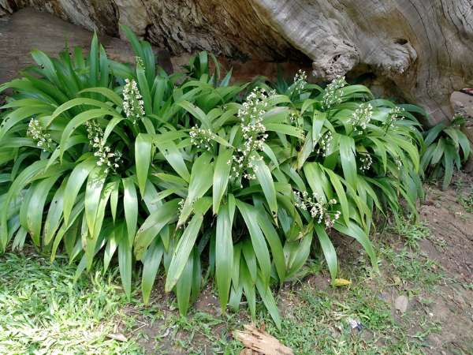

Xiphidium caeruleum
Common Names: Dove Tail Orchid, Blue Xiphidium, False Orchid
Local Name: Dove Tail Orchid (Tamil/Hindi)
Family: Haemodoraceae
Origin: Tropical Americas (Mexico to Brazil)
Plant Type: Perennial tropical herb
Average Lifespan: Many years; clump-forming perennial
| Growth Habit | Clump-forming upright herb with fan-like leaf arrangement |
| Plant Size | 60–120 cm tall |
| Leaves | Sword-shaped, pleated, bright green, 30–60 cm long; arranged in a flat fan |
| Flowers | Small, white to pale blue, borne on branched panicles above the foliage |
| Flower Characteristics | Delicate, star-shaped; blooms repeatedly; attractive to pollinators |
| Root System | Fibrous, clump-forming; spreads by rhizomes |
| Climate | Tropical and subtropical; warm and humid |
| Temperature Range | 18–35°C; frost-sensitive |
| Soil Type | Moist, well-drained, humus-rich soil |
| Soil pH Preference | 5.5–7.0 |
| Sun Requirement | Partial shade to bright indirect light; avoid harsh afternoon sun |
| Water Requirement | Moderate; keep soil moist but not waterlogged |
| Can it Grow in Pots? | Yes, excellent in containers |
| Fertilizer Schedule | Monthly during growing season with balanced fertilizer |
| Recommended Organic Fertilizers | Compost, worm castings |
| Common Pests | Scale insects, mealybugs; generally pest-resistant |
| Common Diseases | Root rot in waterlogged conditions |
| Pruning Time | Remove spent flower stalks; divide clumps every 2–3 years |
| How to Prune | Cut spent flower stems at base; remove dead outer leaves |
| Propagation by Cuttings | Division of clumps in spring; separate rhizome sections with roots |
| Propagation by Seeds | Seeds germinate in 2–4 weeks in warm, moist conditions |
| Market Uses | Ornamental garden plant, landscape accent, container plant |
| Market Value (Approx.) | ₹150–400 per plant in tropical nurseries |
Add your field observations here.